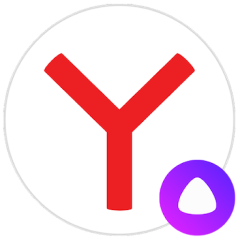

Яндекс Браузер — с Алисой
Безопасный и быстрый браузер с голосовым поиском.
3+
Приложение
Браузер
Описание
Голосовой помощник Алиса умеет решать повседневные задачи:
включит бодрую музыку, подскажет погоду за окном,
определит, что на фотографии, развлечет сказкой и найдёт
что угодно в интернете.
Технология активной защиты Protect предупреждает пользователей об опасных сайтах и страницах с платными мобильными подписками.
Блокировка рекламы позволяет избавиться от назойливых баннеров на интернет-страницах. Для этого необходимо подключить внешнее приложение-блокировщик.
Технология активной защиты Protect предупреждает пользователей об опасных сайтах и страницах с платными мобильными подписками.
Блокировка рекламы позволяет избавиться от назойливых баннеров на интернет-страницах. Для этого необходимо подключить внешнее приложение-блокировщик.
Возможности
Ссылки
Статьи
🔗
Яндекс браузер для Андроид ТВ
->
11 августа 2023, 17:55
1) На miui/emui/flyme и подобных прошивках нужно
выдать microG все возможные разрешения, отключить
запрет на работу в фоне и прочие подобные ограничения
("Умный режим", режим "Смарт-фон" и т.п.), добавить в
исключения энергосбережения. То же самое делаем если
аккаунт периодически вылетает. Ещё иногда помогает
сделать microG системным приложением (например через
Lucky Patcher). 2) Нужно чтобы microG был установлен
до ютуба, а не после. Если сначала был установлен
ютуб, то обычно достаточно просто удалить его и
установить заново. Возможно потребуется перезагрузить
устройство. .article__